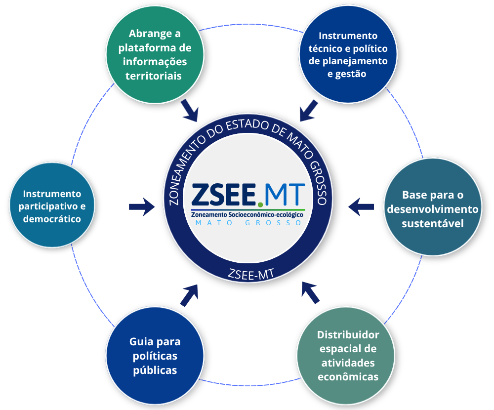
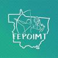
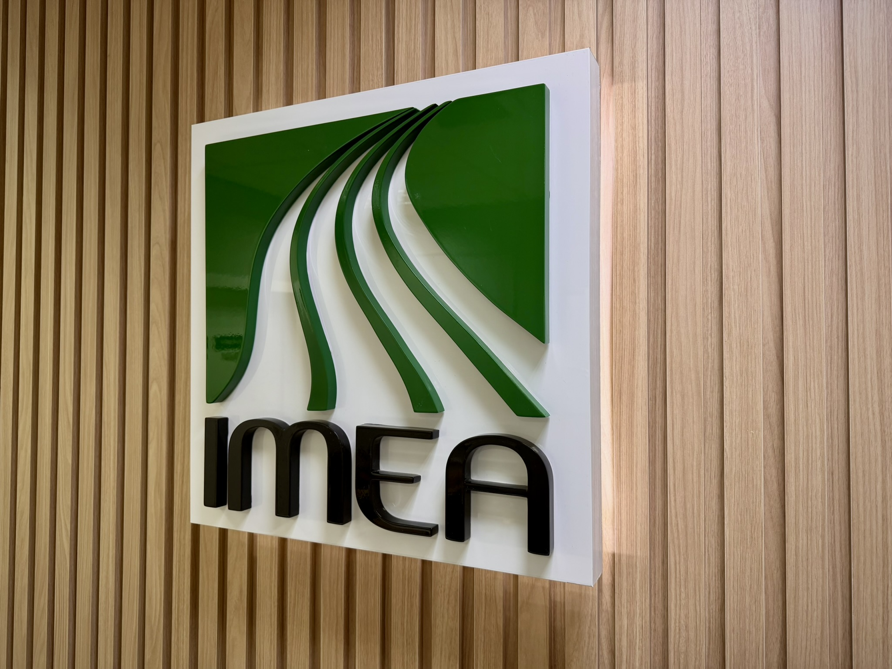
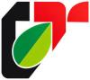

1981
A Constituição do Estado de Mato Grosso estabelece, no art. 263, inciso XV, a obrigatoriedade da elaboração do zoneamento para o estado.
Território e sustentabilidade
O Zoneamento Socioeconômico-Ecológico de Mato Grosso (ZSEE-MT) constitui importante instrumento para orientar o uso do território e promover um desenvolvimento mais equilibrado, sustentável e baseado em critérios técnicos.
De caráter multitemático e transversal, integra informações ambientais, sociais, econômicas e territoriais, proporcionando uma visão sistêmica do Estado e oferecendo diretrizes para subsidiar as decisões do poder público e dos agentes privados.
O ZSEE-MT é, portanto, um instrumento estratégico de planejamento e ordenamento territorial, voltado à promoção do desenvolvimento sustentável. Fundamentado no Decreto Federal nº 4.297, de 10 de julho de 2002, e alinhado aos princípios da Política Nacional do Meio Ambiente (PNMA), instituída pela Lei nº 6.938/1981, busca conciliar o desenvolvimento econômico, a conservação dos recursos naturais e a melhoria da qualidade de vida da população.

Nossa trajetória
Principais marcos institucionais, técnicos e legislativos da construção do Zoneamento Socioeconômico-Ecológico de Mato Grosso.
A Constituição do Estado de Mato Grosso estabelece, no art. 263, inciso XV, a obrigatoriedade da elaboração do zoneamento para o estado.
É sancionada a Lei Estadual nº 5.993, que institui a “Política de Ordenamento Territorial do Estado de Mato Grosso”, baseada numa primeira versão do ZEE na escala 1:1.500.000, elaborada pela SEPLAN.
A então Secretaria de Planejamento,SEPLAN, realiza licitação internacional para elaboração do ZEE. A empresa de consultoria Consórcio Nacional de Engenheiros Consultores (CNEC) é contratada para os estudos.
É dado o início oficial dos trabalhos técnicos da licitação internacional.
É sancionada a Lei Complementar nº 38, que institui o Código Ambiental de Mato Grosso, incluindo o zoneamento como instrumento da Política Estadual de Meio Ambiente.
Ocorre a conclusão dos estudos técnicos do ZEE, iniciados em 1994.
O Poder Executivo de MT envia à Assembleia Legislativa um projeto de lei sobre o zoneamento. Em 2005, o projeto é retirado para revisão.
A Embrapa Solos é contratada para revisar a proposta. Um seminário técnico é realizado com representantes da SEPLAN, SEMA, MMA e outras instituições.
É criada a Comissão Estadual de Zoneamento Socioeconômico-Ecológico (CEZSEE/MT) pelo Decreto Estadual nº 1.139.
O Governador Blairo Maggi envia à Assembleia Legislativa o Projeto de Lei nº 273/2008, instituindo a Política de Planejamento e Ordenamento Territorial do Estado.
A Assembleia Legislativa promove seminários técnicos e audiências públicas nas 12 regiões de planejamento do estado. Participam mais de 50 mil pessoas.
É apresentado o substitutivo integral ao PL 273/2008 pelo Deputado Alexandre César.
Dois novos substitutivos integrais são apresentados por lideranças partidárias, com atualizações e ajustes à proposta anterior.
É aprovado o terceiro substitutivo integral, com 17 emendas, em segunda votação pela Assembleia Legislativa.
A redação final do projeto é aprovada e encaminhada ao Poder Executivo.
É sancionada a Lei Estadual nº 9.523/2011, que institui oficialmente o ZSEE/MT.
O Ministério Público de MT propõe a Ação Civil Pública nº 1067-82.2011.811.0082, questionando a legalidade da Lei nº 9.523/2011. Uma liminar suspende seus efeitos.
Apesar da liminar, o Governo de MT submete o ZSEE/MT à Comissão Coordenadora do ZEE no Território Nacional (CCZEE) para avaliação.
A decisão de mérito da ação civil, proferida pelo Juízo, suspende definitivamente os artigos da Lei nº 9.523/2011 referentes ao ZSEE-MT.
É publicado o Decreto nº 883/2017, que institui a Comissão Estadual do ZSEE/MT (CEZSEE/MT), incluindo representantes do governo e da sociedade civil para acompanhar e avaliar o zoneamento.
Use as setas para explorar os anos. No celular, deslize os cartões para os lados.
Instituições e participação
O estudo do Zoneamento Socioeconômico Ecológico de Mato Grosso (ZSEE-MT) foi desenvolvido pela Universidade Federal de Viçosa (UFV), sob a coordenação da Superintendência de Indicadores Socioeconômicos e Ordenamento Territorial (SISOT) da SEPLAG-MT.
O processo contou com a participação de representantes do poder público, através da Comissão Técnica de Conformidade (CTC), e da sociedade civil, representada pela Comissão Estadual de Zoneamento Socioeconômico Ecológico (CEZSEE-MT), que acompanhou o desenvolvimento dos trabalhos por intermédio de um Grupo de Trabalho específico.
A seguir, apresentam-se a composição e as funções dos grupos envolvidos:
Secretaria de Estado de Planejamento e Gestão
Secretaria de Estado do Meio Ambiente
Secretaria de Estado de Desenvolvimento Econômico
Instituto de Terras de Mato Grosso
Universidade Estadual de Mato Grosso
Secretaria de Estado de Agricultura Familiar
Secretaria de Estado de Fazenda
Secretaria de Estado de Planejamento e Gestão
Secretaria de Estado do Meio Ambiente
Secretaria de Estado de Desenvolvimento Econômico
Instituto de Terras de Mato Grosso
Secretaria de Estado de Saúde
Secretaria de Estado de Segurança
Universidade Federal de Mato Grosso

Federação dos Povos e Organizações Indígenas de MT
Instituto Socioambiental
Instituto Centro de Vida
Operação Amazônia Nativa
Centro das Indústrias Produtoras e Exportadoras de Madeira de MT

Instituto Mato-Grossense de Economia Agropecuária
Fundação Nacional dos Povos Indígenas
Universidade Estadual de Mato Grosso
Secretaria de Estado de Infraestrutura
Secretaria de Estado de Agricultura Familiar
Secretaria de Estado de Assistência Social e Cidadania
Secretaria de Estado de Educação
Federação das Indústrias no Estado de Mato Grosso
Federação dos Trabalhadores na Agricultura de MT
Representante das Comunidades
Federação de Agricultura e Pecuária de Mato Grosso
Associação Mato-grossense dos Municípios

Centro de Tecnologia Alternativa
Instituto Chico Mendes
Instituto Nacional de Colonização e Reforma Agrária
Secretaria de Estado de Planejamento e Gestão
Secretaria de Estado de Agricultura Familiar
Universidade Federal de Mato Grosso
Federação dos Povos e Organizações Indígenas de MT
Instituto Socioambiental
Instituto Centro de Vida
Universidade Estadual de Mato Grosso
Federação das Indústrias no Estado de Mato Grosso
Representante das Comunidades
Federação de Agricultura e Pecuária de Mato Grosso
Associação Mato-grossense dos Municípios